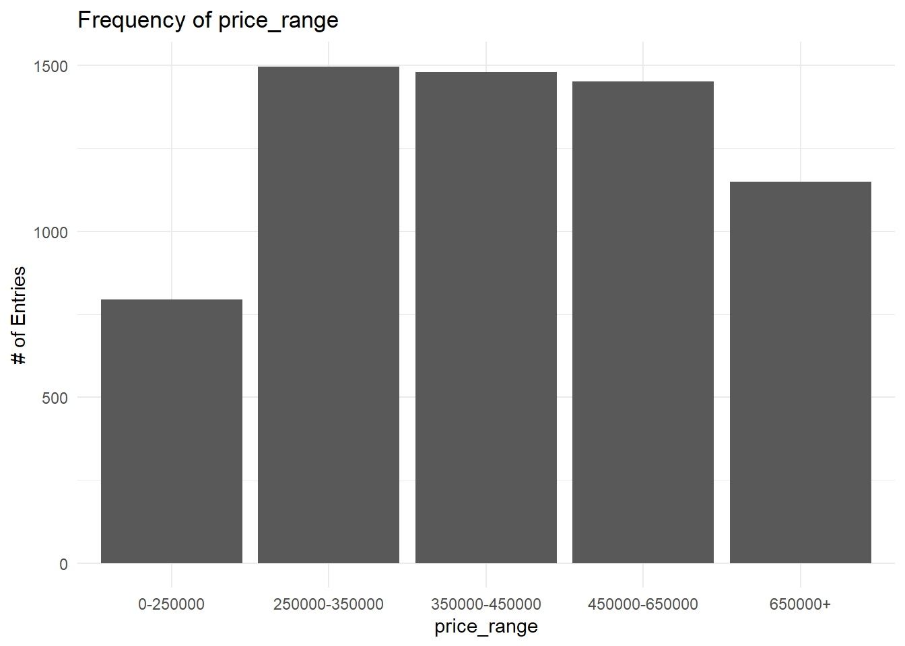

This project aims to predict the listed price range for a property listed on Zillow based on information about the property. The predictions will be obtained using statistical learning and machine learning techniques by training on a dataset of Zillow listings. The final result may be of interest to Zillow or competing brands because it will allow for accurate price predictions of newly listed properties.
Executive Summary
Introduction
Exploratory Data Analysis
Code
train %>%head(10) %>%kable() %>%kable_styling()
id
city
description
home_type
latitude
longitude
garage_spaces
has_spa
year_built
num_of_patio_and_porch_features
lot_size_sq_ft
avg_school_rating
median_students_per_teacher
num_of_bathrooms
num_of_bedrooms
price_range
3558
austin
1803 Adriane Dr #B, Austin, TX 78721 is a single family home that contains 1,879 sq ft and was built in 2018. It contains 3 bedrooms and 3 bathrooms.
Single Family
30.28384
-97.69103
0
FALSE
2018
0
5227.0
3.333333
13
3
3
450000-650000
6537
austin
13009 Lamplight Village Ave, Austin, TX 78727 is a single family home that contains 1,663 sq ft and was built in 2001. It contains 4 bedrooms and 3 bathrooms.
Single Family
30.42347
-97.69174
2
FALSE
2001
1
7143.0
4.333333
13
3
4
250000-350000
1354
austin
When you walk through the double doors is the moment you realize this 3 bedroom 2.5 home is ready for you to make new memories here. The front siting/living room is complimented with 6 windows allowing sunlight to shine through. As you walk towards the back of the home you will pass your formal dining area to back living room highlighted by a large picture window framing your backyard views. The entertainer in you will love the tasteful separation of space allowing a perfect flow through all areas.
Single Family
30.21030
-97.85051
2
FALSE
1986
0
5837.0
4.666667
14
3
3
350000-450000
6110
austin
Stunner! Recent transformation ready for immediate move in. Check out this rare one-story gem in highly desirable Great Hills. High-end design choices that include bamboo wood floors, champagne bronze fixtures, marble tile & quartz counter tops. You'll love your brand new kitchen that opens to the living room with a large center island, built in oven and microwave, gas cook-top, brand new soft-close cabinets, & quartz countertops. The master shower is to die for, bringing you luxury, elegance, & functionality. Extend the party to your outdoor living space that offers no one behind you - just a serene wooded view sure to bring you peace & relaxation. This home is nestled in a superb location with rolling hill views, golf course, perfect for walking/jogging, and close to tons of shopping and restaurants like the Arboretum. Acclaimed Round Rock School District with an Austin address. Start thinking about that housewarming party and come and get me!!!
Single Family
30.41747
-97.77426
0
FALSE
1992
0
11325.6
8.333333
16
2
4
450000-650000
6444
austin
OPPORTUNITY! Wow what a great find. Original groovy interior, super clean and well cared for home awaits new owner. This home has huge potential with a great flowing floor plan, large rooms and bedrooms, plus an incredible lot with many large trees! Location is awesome too, close to everything.
Single Family
30.36387
-97.74558
0
FALSE
1965
0
9288.0
7.000000
17
2
3
450000-650000
7483
del valle
The huge living room and open floor plan. Granite kitchen counters. Large kitchen pantry and perfect size bedrooms. Tile throughout, carpet in bedrooms only. Extended outdoor white rock patio w/gable ceiling and outside counters for entertaining. Also very private. Location! Location! Location!
Single Family
30.16755
-97.61995
0
TRUE
2008
0
6098.0
3.333333
14
2
3
0-250000
2769
austin
Not in MLS. 2 bedrooms, 1 bath upstairs. 2 bedrooms, 1 bath downstairs. Vintage 1940's duplex in the heart of Rosedale Neighborhood located one block from Ramsey Park. Here is your opportunity to live the good life in one of Austin's best centrally located neighborhoods. Endless possibilities for this property. Owner paying 3% to agent who brings and closes an acceptable offer.
|Single Fam
ly | 30.3
537| -97.7
238|
1|FALS
|
941|
1| 65
7.0| 6.00
000|
16|
3|
4|450000-650
6123
austin
Just across the street from the community playscape. Open living/dining/kitchen area. Wood plank hard tile floors down. Double oven, built in microwave. Whirlpool washer and dryer. All bedrooms and one living area up. Home is gently lived in and well maintained. 11' ceilings. Zoned sprinkler system, treated cedar plank fencing. Front exterior security lights, prewired for a security system, built in termite treatment system. CAT 6, USB outlets. Under stair storage.
Single Family
30.39241
-97.64922
0
FALSE
2016
0
5140.0
3.000000
14
3
4
250000-350000
7040
austin
This Wells Branch home is completely remodeled inside and out! Elegant grey tile throughout the main level. Gorgeous brick fireplace in family room. Bonus room on main level. The kitchen is stunning with beautiful white cabinetry, granite countertops, and brand new stainless steel appliances. Plenty of windows let a ton of natural light flow into the home. Master suite includes a huge bedroom, two clothes closets, double vanity with oversized framed mirror, walk-in shower, and deep garden tub. New windows in every room. Outside, the large fenced in backyard provides the perfect daily retreat!
Single Family
30.43639
-97.67675
0
FALSE
1985
0
6817.0
2.666667
14
3
3
250000-350000
6467
austin
4 bed/3 bath gem nestled on spacious corner lot in NW Hills. Home boasts beautiful updates while maintaining Mid-Century feel. Features include great floor-plan, open kitchen w/breakfast bar, formal dining, updated windows, custom built-in shelving, upgraded mud-room, 1-car garage & fully-fenced private yard to boot! Prime location, feeds into exemplary schools & just minutes from shopping & restaurants. Pride in ownership shows, view this special home!
Single Family
30.33981
-97.75845
2
FALSE
1957
0
12196.8
7.000000
16
3
4
450000-650000
First impressions:
“id” is very likely unique and so is meaningless for predictions. The range is 0-7500 and there are 7498 data entries from the raw data.
The home_type could function as a category for use as a dummy variable. I should check to see how many categories there actually are, and that they are formatted the same so that a string comparison will work.
I should do the same things for city. Intuitively, city will surely affect price, so I should make sure this data is usable.
“garage_spaces” is numeric with range 0-22. Before seeing the range, I would have said maybe it would be better as a factor, but that’s a large range. I should see the distribution. It should be a helpful predictor, though I should make sure the rare high values aren’t causing anything weird.
The “year_built” may be a helpful predictor, though I’m not sure if pure numeric is the right approach there. Range is 1900-2020. Certainly it cannot be used as categorical as it is now, but the difference between a house built in 1990 vs 1991 may be insignificant. And years don’t simply indicate things based on their numeric value. They work more as a category than a numeric value when we figure out how much a house is worth. Maybe houses built in a single specific year are worth less. Treating the year as a numeric value doesn’t seem like that will be treated correctly. Creating ranges might help maybe? Creating categories basically? Maybe the math does this work for me already though.
Description is immediately going to be tricky to squeeze any worth out of, and there very possibly is no worth in there at all. I’d have to do some like NLP sentiment analysis or specific keyword searching to get anywhere there. It probably wouldn’t be worth it, but it might be cool to try if I have time.
Now, latitude and longitude are really interesting. They are connected values but are separate (which is fine). But I’m really not sure if either are influential. Perhaps they could imply that warmer climates are more….desirable? Certainly proximity to cities makes houses more expensive, so this will do some double dipping with city. Using an interaction step between lat and long would be great potentially. It would be great if that would totally replace the city column with something better and more precise.
The rest of the values are numeric and seem like they will perform fine as they are.
“home_type” and “garage_spaces” value distributions
Code
#check home_type entries and rarity#check garage_spaces entries and raritytable(train$home_type)
Apartment Condo Mobile / Manufactured
13 224 6
MultiFamily Multiple Occupancy Residential
3 43 19
Single Family Townhouse Vacant Land
5978 84 3
So, for “home_type”, There are 5,978 “Single Family” entries, and then 8 categories for the remaining 395 entries. The small amount of entries per category relative to the dataset might mean this predictor will not be helpful. Special care must be taken for the cross validation splits in order to make use of many (probably 6) of these categories.
For “garage_spaces”, there are entries for 0-10, 12 and 22. There is a single entry for 22 garages, making it certainly an outlier. There are only 15 entries that have 7,8,9,19, or 12 garages. Or, there are only 16 entries that have more than 6 garages. Having 5 categories for only 16 entries seems silly.
For both of those though, I think the step_other solves it automatically by grouping rare categories into an other…but that’s only for categories I think (so it’d work automatically for home_type but not garage_spaces). Garage_spaces used numerically will just work, but maybe it would work better if I manually made categories.
Predicter Distributions Visualizations
Code
p1 <-ggplot(train, aes(x = city)) +geom_bar() +labs(title ="Frequency of Cities",x ="City",y ="# of Entries") +theme_minimal()p2 <-ggplot(train, aes(x = home_type)) +geom_bar() +labs(title ="Frequency of home_types",x ="home_type",y ="# of Entries") +theme_minimal()p3 <-ggplot(train, aes(x = garage_spaces)) +geom_bar() +labs(title ="Frequency of garage_spaces",x ="garage_spaces",y ="# of Entries") +theme_minimal()p4 <-ggplot(train, aes(x = has_spa)) +geom_bar() +labs(title ="Frequency of has_spa",x ="has_spa",y ="# of Entries") +theme_minimal()p5 <-ggplot(train, aes(x = year_built)) +geom_bar() +labs(title ="Frequency of year_built",x ="year_built",y ="# of Entries") +theme_minimal()p6 <-ggplot(train, aes(x = num_of_patio_and_porch_features)) +geom_bar() +labs(title ="Frequency of num_of_patio_and_porch_features",x ="num_of_patio_and_porch_features",y ="# of Entries") +theme_minimal()#sq feet isnt graphable this wayp8 <-ggplot(train, aes(x = avg_school_rating)) +geom_bar() +labs(title ="Frequency of avg_school_rating",x ="avg_school_rating",y ="# of Entries") +theme_minimal()p9 <-ggplot(train, aes(x = median_students_per_teacher)) +geom_bar() +labs(title ="Frequency of median_students_per_teacher",x ="median_students_per_teacher",y ="# of Entries") +theme_minimal()p10 <-ggplot(train, aes(x = num_of_bathrooms)) +geom_bar() +labs(title ="Frequency of num_of_bathrooms",x ="num_of_bathrooms",y ="# of Entries") +theme_minimal()p11 <-ggplot(train, aes(x = num_of_bedrooms)) +geom_bar() +labs(title ="Frequency of num_of_bedrooms",x ="num_of_bedrooms",y ="# of Entries") +theme_minimal()p12 <-ggplot(train, aes(x = price_range)) +geom_bar() +labs(title ="Frequency of price_range",x ="price_range",y ="# of Entries") +theme_minimal()p1
Code
p2
Code
p3 + p6
Code
p4 + p5
Code
p8 + p9
Code
p10 + p11
Code
p12

So, just looking at the distributions, the city and home_type columns are a bit worrying because they have overwhelming majority in a single category. It may imply that there isn’t much to learn for certain from these columns.
The has_spa, garage_spaces, num_of_patio_and_porch_features, num_of_bathrooms, and num_of_bedrooms columns all have the strong presence of outliers (which is not unexpected). I just need to be careful with these, but they should be fine.
The rest of the potential predictors look healthy. The distribution of price_ranges is especially healthy which is good to see.
Graphing Potential Predictors to Price_Range
Code
potential_numeric_predictors <-c("latitude","longitude","garage_spaces","year_built","num_of_patio_and_porch_features","avg_school_rating","median_students_per_teacher","num_of_bathrooms","num_of_bedrooms")# Create boxplots for each numeric predictor...the purrr library made it easierplot_list <-map(potential_numeric_predictors, function(var) {ggplot(train, aes(x = price_range, y = .data[[var]])) +geom_boxplot(fill ="steelblue", alpha =0.6, outlier.color ="red") +labs(title =paste("Boxplot of", var, "by Price Range"), x ="Price Range", y = var) +theme_minimal()})print(plot_list)
[[1]]
[[2]]
[[3]]
[[4]]
[[5]]
[[6]]
[[7]]
[[8]]
[[9]]
Code
#doing a log scale so resuls are visibleggplot(train, aes(x = price_range, y =log10(lot_size_sq_ft))) +geom_boxplot(fill ="steelblue", alpha =0.6, outlier.color ="red") +labs(title ="Log-Transformed Lot Size by Price Range", x ="Price Range", y ="Log(lot_size_sq_ft)") +theme_minimal()
I will look in more detail later, but for now:
It looks like latitude increases as price range increases.
It looks like longitude decreases as price range increases.
Garage_spaces seem to increase as price range increases.
So far: there doesnt seems to be a noticeable difference in predictors between the two highest price_range categories. (call this pattern 1)
Not a significant or visible pattern for year_built. Makes sense to me. I bet years are predictive, but not as numerical values. Pattern 1 still holds.
The median doesn’t noticeably change for the number of patio/porch features, but the upper range increases as price range increases. Expensive houses dont need a bunch of patio/porch features, but if there are a bunch of patio/porch features then it’s probably expensive. Pattern 1 still holds.
Clear increase of price range as average school rating increases. pattern 1 still holds.
semi clear increase of mediam students per teacher as price range increases. the two lowest categories are very similar. Pattern 1 still holds.
for number of bathrooms, it doesnt seem to make a difference between the 3 lowest price ranges (call this pattern 2). Then it jumps up for the last two ranges. Pattern 1 is close but not really here. It looks like the number of bathrooms will be a prime difference between the highest 2 price ranges.
For the number of bedrooms, we see the same pattern 2. Then we see a pattern 1 as well. There is an increase in the number of bedrooms as price range increases eventually.
The lot size was not interpretable without a log transformation. Even with the transformation though, the range of lot sizes is vast and inconsistent with price ranges (which is surprising honestly). There is a slight increase in median lot size as price range increases, but it may not be significant. This predictor intuitively seems important. Perhaps it will pair well within an interaction somehow.
Pattern 1 - that there is barely a difference between the predictor within the highest two price ranges
Pattern 2- that there is barely a difference between the predictor within the lowest three price ranges
All are still promising predictors except for year_built and maybe lot size. Intuitively, I think there is value within them. I have suspicions and hope that with some interactions or data manipulation, that these two predictors may become valuable.
Model Construction
Model Construction without Cross Validation (Statistical Learning / Interpretation Focused)
Model Construction with Cross Validation (Machine Learning / Predictive Performance Focused)